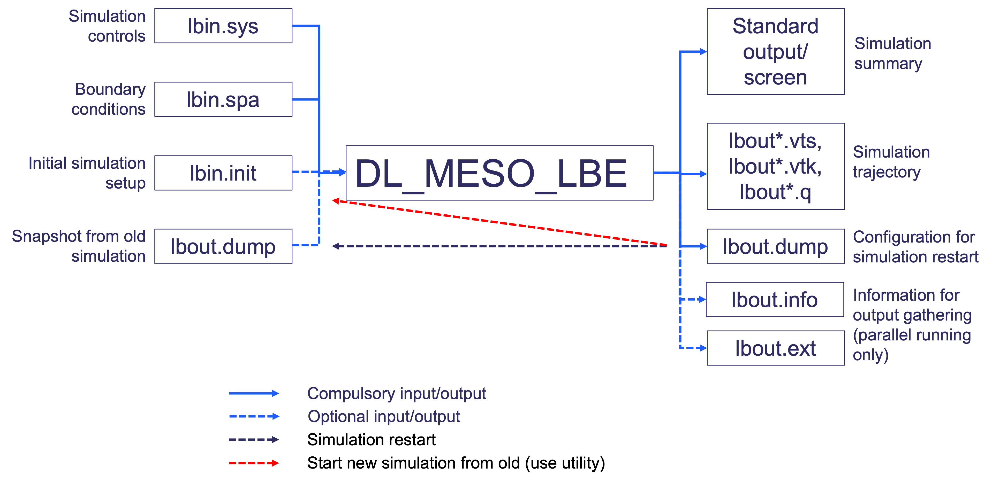

DL_MESO_LBE files¶
The LBE code in DL_MESO, DL_MESO_LBE, makes use of various input files to describe the simulation, including its initial state and boundary conditions, and creates output files indicating how the system has evolved over time. A summary description of the files, what they do and how they can be used are given in the diagram below.
{kind=link}
It should be noted that not all the input files shown here are required for a DL_MESO_LBE simulation run, while some of the output files are only produced when running DL_MESO_LBE on multiple cores using MPI.
The internal units used by DL_MESO_LBE are:
- Lattice-grid spacing \(\Delta x\)
- Timestep size \(\Delta t\)
which can be related to the speed of sound and kinematic viscosity of a selected fluid. The latter quantity is also connected to the relaxation time \(\tau\), which should be chosen to not be too close to \(\tfrac{1}{2}\) to avoid numerical instabilities. The fluid densities are generally free parameters, although these affect the values of distribution functions and are normally kept close to 1 in calculations to maximise precision.

lbin.sys
This file specifies the simulation, in terms of the LBE models in use (including collision and interaction types), the system size, initial conditions, fluid properties at boundary conditions and how long the simulation needs to run. Each line of the lbin.sys file contains a keyword (with underscores between individual words) and a corresponding value, as shown in the following example (an extract from a file for one of DL_MESO’s demonstration cases):
The first ten lines shown here, from space_dimension to domain_boundary_width, must be included in the lbin.sys file for all DL_MESO_LBE simulations, although the order in which they appear does not matter. This information includes:
- the number of space dimensions and discrete speeds (lattice links), describing the lattice scheme to be used
- the number of fluids (each modelled on its own lattice)
- the number of solutes (each modelled on its own lattice)
- whether or not a temperature field is to be modelled
- whether or not a phase field is to be modelled (an option currently not in use in DL_MESO_LBE)
- the number of grid points in each spatial direction for the simulation
- the size of the boundary halo of lattice points for core-to-core communications when running in parallel
Most of the values with the keywords are numbers, but some (e.g. for collision and interaction types) are descriptive words. Which properties need to be specified beyond the basic ones above will depend upon the numbers of fluids, solutes and temperature fields, the type of fluid interactions and the types of boundary conditions required. Some values that need to be specified for all LBE simulations include the relaxation times or frequencies and initial densities for the available fluids.
It should be noted that if a particular keyword is used more than once, the value from the last line with that keyword will be used.
A full list of the available keywords in lbin.sys and possible values can be found in Chapter 6 of The DL_MESO User Manual.
lbin.spa
This file specifies boundary conditions that need to be applied at specific grid points. The format of the lbin.spa consists of lines, each of which includes the Cartesian (\(x\)-, \(y\)- and \(z\)-dimensional) coordinates of a given grid point and a numerical code indicating the boundary condition to be applied, all separated by spaces. The following example is taken from part of an lbin.spa file for one of DL_MESO’s demonstration cases:
The grid points do not have to be in any numerical order, although the boundary condition for any repeated grid point will be overwritten by DL_MESO_LBE. Any grid point that is not specified in this file is assumed to be a fluid-filled point or, if it lies on the outside of the simulation box, to have a periodic boundary condition (equivalent to a boundary code of 0). All DL_MESO_LBE simulations require a lbin.spa file, even if it only applies periodic boundary conditions (and is therefore empty).
The boundary condition codes indicate both the type of boundary condition and (in most cases) the direction in which it is applied. With the exception of blank sites and bounce-back boundary conditions that can be applied at any arbitrary grid point, all other boundary conditions are typically applied at planar surfaces, concave edges and concave corners at the outside of the simulation box. The conditions that can be applied at these surfaces, edges and corners include:
- constant velocity or fluid densities
- constant solute concentrations or zero concentration gradients (in the form of bounce-back)
- constant temperature or zero temperature gradient (in the form of bounce-back)
The values of the velocities, fluid densities, solute concentrations and temperatures applied at surface, edge and corner boundaries are specified in the lbin.sys file, as are the methods used to apply these boundary conditions (e.g. Zou-He, Inamuro).
While the lbin.spa file can be created and edited by hand - with the boundary condition codes specified in Chapter 6 of The DL_MESO User Manual - it is generally easier to use the DL_MESO Java GUI or a script to create this file.
lbin.init
This file is used by DL_MESO_LBE to specify the initial conditions for a LBE simulation at specific grid points. Each line in the lbin.init file consists of the Cartesian (\(x\)-, \(y\)- and \(z\)-dimensional) coordinates of a given grid point followed by the velocity of the fluids at that grid point (giving \(x\)-, \(y\)- and \(z\)-components), the densities of all fluids, the concentrations of all solvents and the temperature. A short extract from an lbin.init file for one of DL_MESO’s demonstration cases (for a two-fluid system) is given here:
The lbin.init file is optional since the initial conditions (velocity, fluid densities etc.) across the entire system are specified in the lbin.sys file, but the file can be used to substitute different initial values at selected grid points to represent e.g. suspended fluid drops. It can be created and edited by hand, but it is generally easier to use one of DL_MESO’s utilities (init.exe) or a script to create it.
lbout.dump
This binary file is created by DL_MESO_LBE at regular intervals to provide a simulation restart capability. It consists of the distribution functions - the underlying values used for lattice Boltzmann calculations - at each and every point in the simulation grid. The file is created once the simulation is set up (at timestep 0) and at regular intervals, overwriting the previous version of the file each time. The distribution functions can be directly read from the file into memory by DL_MESO_LBE when it is used to restart an interrupted simulation or extend a previously completed one.
The frequency of writing this file can be specified in the lbin.sys file with the keyword dump_span, although a default of 10 000 timesteps is used if this is not specified. The file can be used to restart or resume a previous simulation by including the keyword restart_simulation in lbin.sys and assigning a value of 1. This restart or resumption will only work if:
- the same lattice scheme and numbers of grid points in each direction are used as the previous calculation
- the total number of timesteps specified in the lbin.sys file is greater than the timestep number when the lbout.dump file was created
The file can be used to create a lbin.init file for a new simulation with the dump_to_init.exe utility supplied with DL_MESO. The corresponding simulation state can also be visualised using the dump_to_vtk.exe <lbedumpvtk> utility, which generates a VTK file that can be opened in Paraview.
Standard output/screen
As DL_MESO_LBE runs, messages about the simulation are printed to the screen or, in the case of a supercomputer with job submissions, a file for standard output. This provides a summary of the information included in the supplied input files and how the calculation is carried out, brief summaries of the simulation state at regular intervals, and performance/timing data for the calculation. Any error messages due to problems arising from the contents of input files will also appear here before DL_MESO_LBE is terminated early.
The first messages (as shown in the example below) include a header about DL_MESO_LBE, a timestamp for when the program starts to run, a summary of the simulation based on information provided in the input files - including the lattice scheme and size, the numbers of fluids, solutes and temperature scalars, collisions, forcing and fluid interactions - and how the calculation is divided up among available processor cores and/or threads. In the case of running on multiple cores, DL_MESO_LBE includes a table showing which section of the grid is assigned to each core.
At intervals specified by the save_span keyword in lbin.sys, the total mass of all fluids, the masses of individual fluids and the overall system momentum are printed, along with the timestep number and the elapsed calculation time in seconds. If the number of equilibration time steps is specified in the lbin.sys file, a message will be printed once the equilibration period is complete.
The fluid masses and momenta can be used to determine whether or not the calculation is running as expected and/or correctly. For instance: rapid changes in fluid masses are likely to indicate numerical instabilities in the LBE calculation, while convergence of system momentum to a constant value may indicate the system has reached a steady state.
At the end of the calculation, DL_MESO_LBE prints the total elapsed calculation time in seconds, a timestamp when the program finishes, and a calculation efficiency measure: Millions of Lattice Updates per Second (MLUPS). The final message reminds the user to cite DL_MESO (either using its website or its article in Molecular Simulation) if the calculation results are published.
It is possible to redirect the printed messages to a file instead of to the screen or standard output when launching DL_MESO_LBE, using a command such as:
lbout*.vts, lbout*.vtk, lbout*.q
The main simulation output files from DL_MESO_LBE can be generated in one of three formats:
- XML-based structured grid VTK (lbout*.vts, default for DL_MESO_LBE)
- Legacy-format structured grid VTK (lbout*.vtk)
- Plot3D (lbout*.q)
These files contain all macroscopic and simulation-specific properties at each grid point - the velocity, fluid densities and mass fractions, solute concentrations, temperatures and boundary conditions - and can be used in Paraview to visualise the simulation and analyse the results (as shown below). A series of files is typically generated during a simulation to provide a time progression of the system, starting after any equilibration timesteps and produced at intervals specified by the save_span keyword in lbin.sys.

The default XML-based structured grid VTK format (lbout*.vts) includes XML tags describing grid properties (e.g. size, extent) and indicating the values for each property at each grid point. The text form of these files places the property values between the tags, while the binary form places the data into a large block and the tags indicate where the data for each property starts inside that block.
The legacy structured grid VTK format (lbout*.vtk) lays out the property data underneath lines with specific keywords. Both the text and binary forms of these files use the same approach. (More details about both VTK file formats can be found in this document.)
The Plot3D format consists of solution files (lbout*.q) indicating the values of a given property, fluid velocities and boundary conditions for all grid points at each frame, as well as a grid file (lbout.xyz or lbout.xy) indicating the locations of the grid points. Since only one property (fluid density, mass fraction, solute concentration or temperature) can be included in a solution file, a solution file is created for each property and trajectory frame. Both the grid file and the solution files need to be loaded into Paraview to visualise the simulation and analyse the results.
If the simulation is run in parallel on multiple processor cores, more than one file per simulation trajectory frame may be generated: by default a file (or a set of Plot3D solution files) is produced by each processor core for each frame. This default can be overridden by using the output_combine_x, output_combine_y and output_combine_x keywords in the lbin.sys file to combine the data among processor cores in those directions for file writing, thus reducing the number of files produced per frame. If all three keywords are invoked, DL_MESO_LBE will create a single file (or set of Plot3D solution files, one per property) per trajectory frame.
lbout.info, lbout.ext
These small files are only created if DL_MESO_LBE is run in parallel on multiple processor cores using MPI and are used to gather together output files for visualisation and analysis.
The lbout.info file contains basic information about the LBE simulation: the numbers of spatial dimensions, fluids, solutes and temperature scalars, the number of files produced per trajectory frame and the sizes of integers and floating point numbers in those files (given in bytes). This file is used by two utilities:
- plot3d.exe creates new output files (lbtout.xyz and lbtout*.q) from multiple Plot3D files for each frame
- vtk.exe creates additional lbout*.pvts files to link together all lbout*.vts created for each frame
The lbout.ext file contains information about the grid extents covered by each processor core’s lbout*.vts files. This file is used solely by the vtk.exe utility and is only generated if more than one output file is produced per frame.